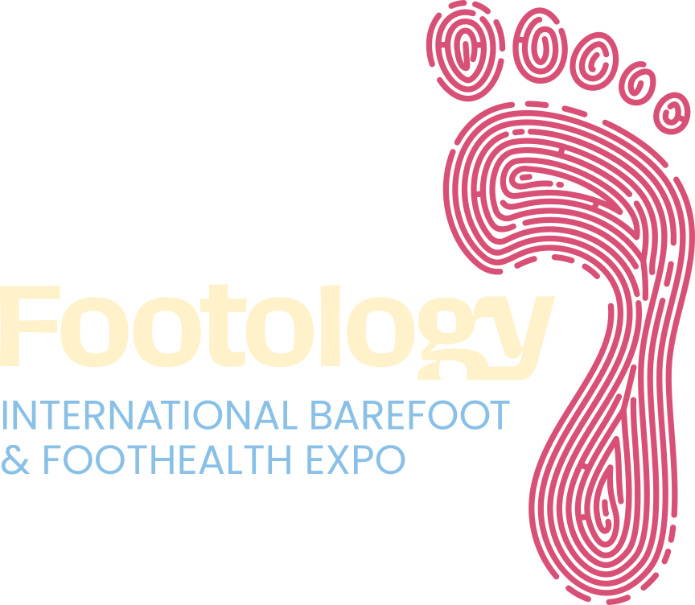
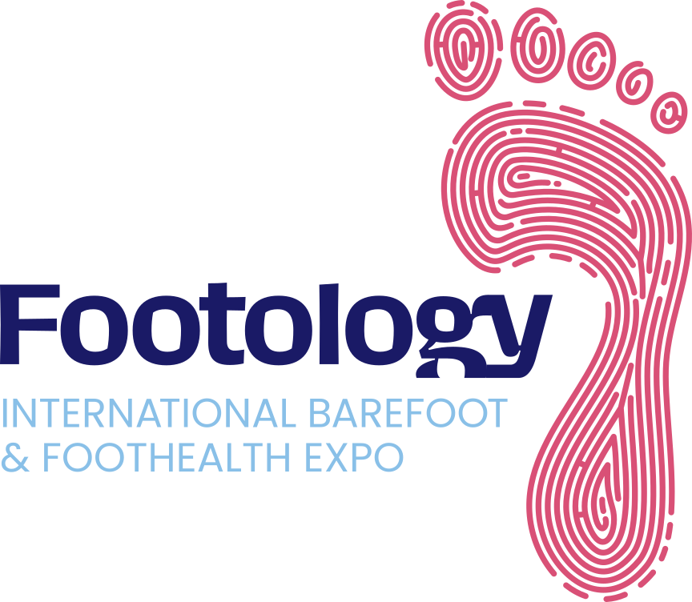

Dr. Juan José López Martínez
[Titulación y especialidad]
[Institución o clínica]
[Una línea de trayectoria]
@drlopezmartinez · 121k

1st International Barefoot & Foothealth Expo · Valencia · [fechas]
Dossier de patrocinio
Organiza: Feria Valencia
La oportunidad
Más marcas, más demanda, más confusión. Hace falta criterio.
Fuentes: 1 [fuente y enlace] · 2 [fuente y enlace] · 3 [fuente y enlace]
El problema: falta de criterio
Sin criterio para elegir entre productos que dicen lo mismo y no son lo mismo.
Sin un foro común donde dialogar con la industria y contrastar evidencia.
Compitiendo con productos que solo usan la etiqueta.
Footology nace para poner la evidencia en el centro.
La dirección científica
[Titulación y especialidad]
[Institución o clínica]
[Una línea de trayectoria]
@drlopezmartinez · 121k
Podóloga · [especialidad]
[Institución o clínica]
[Una línea de trayectoria]
@neusmoya.podologa · 700k
Fisioterapeuta · [especialidad]
[Institución o clínica]
[Una línea de trayectoria]
@jesus.serrano.fisio · 162k
+900.000 seguidores como canal de divulgación en salud del pie
Comité científico y avales
Solo se muestran logos de avales confirmados.
Qué es Footology: cuatro espacios
Ponencias, talleres y comunicaciones diseñados por la dirección científica.
Marcas de calzado respetuoso, ortopedia y cuidado del pie, con showroom B2B y B2C.
Demo labs, pitch sessions y contacto con universidades y centros de I+D.
Talleres de movimiento natural y charlas abiertas al público general.
El programa científico
Cinco bloques temáticos × cuatro formatos. La asignación final de sesiones la decide el comité científico. Comunicaciones (abstracts) con convocatoria abierta [fechas].
Pasarela y Short Talks
A quién vas a llegar
Footology comparte pabellón con FIMI, la feria internacional de moda infantil: compradores y marcas de calzado infantil a un paso del congreso.
Desglose de la previsión anterior (3.000 visitantes). Pendiente de alinear con la cifra de Feria Valencia.
La garantía de Feria Valencia
Captación internacional con el apoyo de
Cómo trabajamos
Dirección científica

Un evento, dos responsables
Feria Valencia
Organización
Independencia científica
El comité científico decide el programa sin intervención de los patrocinadores.
Todos los espacios patrocinados se identifican como tales ante el público.
Quien patrocina se asocia a algo creíble, no a un escaparate.
Oportunidades de patrocinio
| Paquete | Para quién | Contrapartidas tipo |
|---|---|---|
| Partner principal | Marca líder de la categoría | Naming del congreso o de la sala, presencia en toda la comunicación |
| Sala o bloque científico | Ortopedia, dermofarmacia | Espacio patrocinado identificado, presencia en programa |
| Demo lab | Health-tech, materiales | Espacio de demostración ante clínicos |
| Pasarela | Marcas de calzado | Presencia en desfiles y contenidos |
| Zona familias | Aseguradoras, marcas infantiles | Branding del espacio y talleres |
| Short Talks | Startups, marcas emergentes | Microcharla en el escenario abierto |
Feria Valencia prepara una propuesta a medida, con precios, para cada patrocinador.
Patrocinios · Feria Valencia
[Nombre]
[email · teléfono]
Contenidos · Footology
[Nombre]
[email · teléfono]
[fechas] · [pabellón], Feria Valencia · footolo.gy
Organiza: Feria Valencia